All right. Onto the next day of the trip. Today, we're at Skara Sommerland. It's not a really big park. Hell, there's only one reason we're even here.
Yep. We're here mostly for Tranan.
Tranan is currently the only S&S...whatever the hell it is. And let me tell you. It's one of the most f*cked up coasters on the planet.
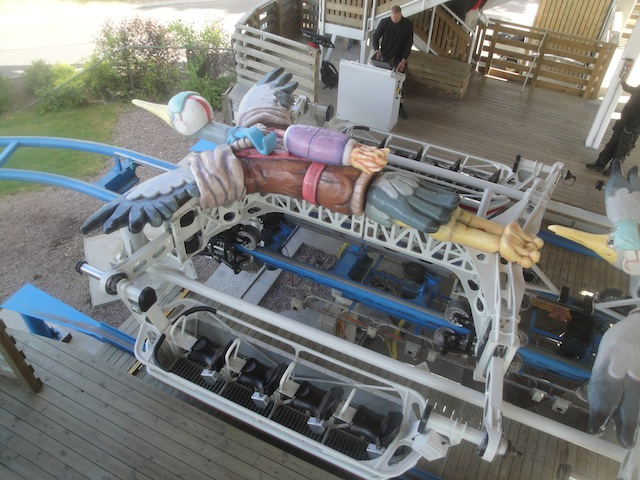
First off, there's minimal restraints. It's just sitting in a bath tub with a seatbelt. That's it.
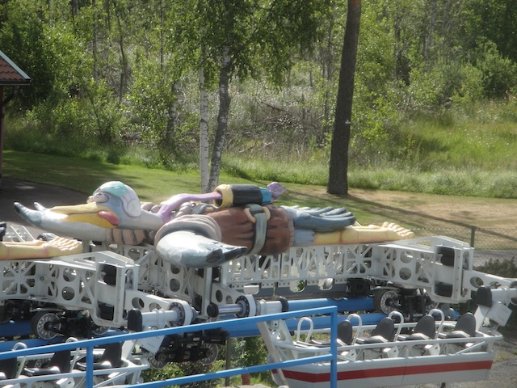
Can we ride in the drunk bird please?
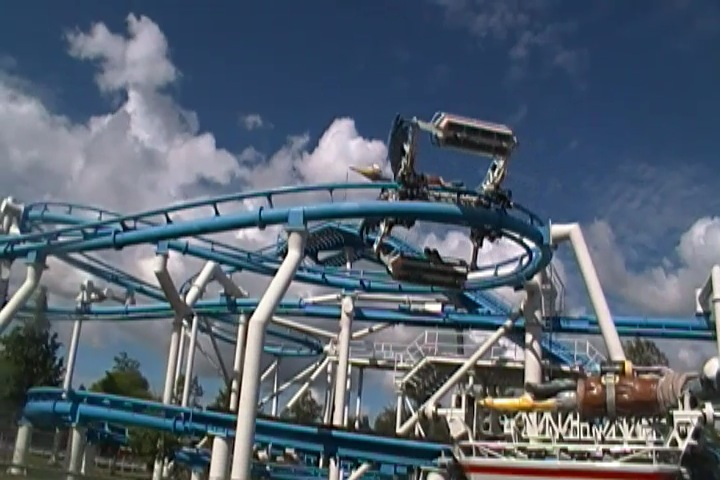
This is just...yeah, you have to ride this ride to get it.
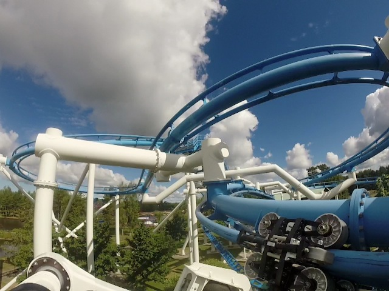
This ride may flip and invert, but the train always stays right side up, so it's quite a freaky feeling.
See, the bird may be upsidedown, but everyone is still right side up. =)
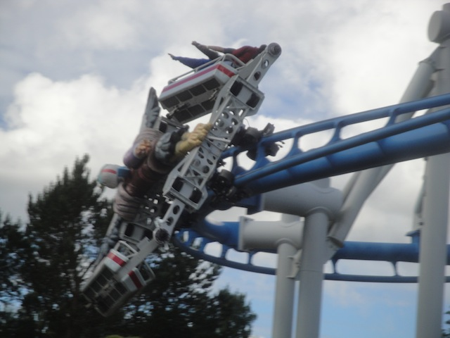
It's a shame that there probably won't be another ride like this ever built again, cause it's really fun.
You gotta see a ride this bizzare in action. =)
Just one other credit left to get here, so let's finish that up.
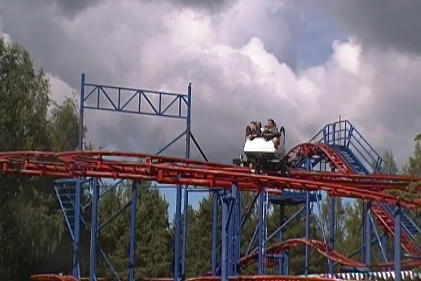
Wow. I would've never guessed that Spinner was a spinning coaster. Such a clever name you got there. ;)
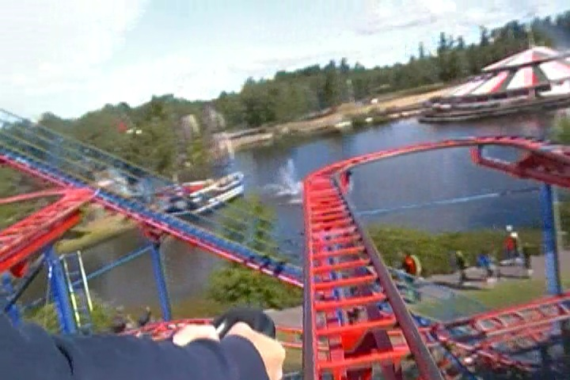
While this was certainly not the best spinning coaster by any means, it was fun and spun a little.
Wee!!! =)
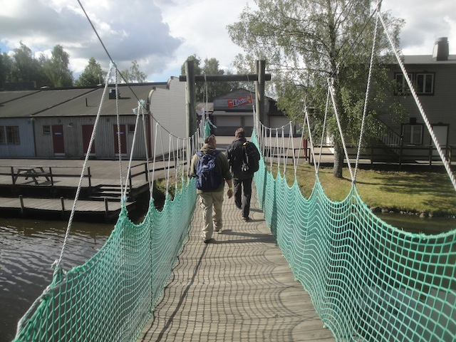
All right. Let's go across the bridge and check out the rest of what the park has to offer.
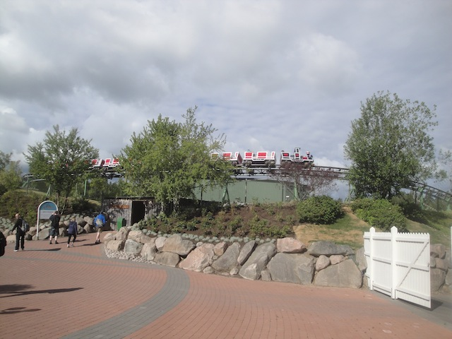
Oh great. There's a psuedo credit for all the super whorish people to get. *Sigh* Might as well join them.
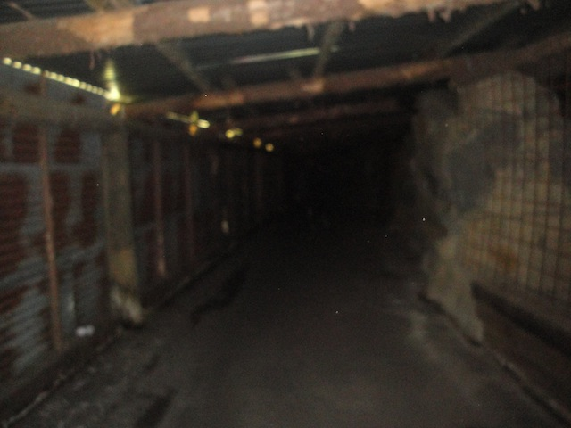
Well, gotta give them credit where credit is due. This is a pretty cool line.
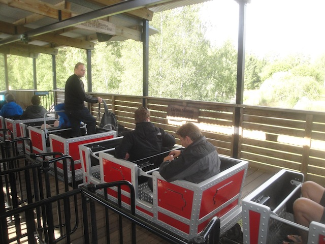
Group takeover of Gruvbanan!!!
They were playing ABBA in the station (not my favorite, but tolerable) and everyone turned the ride into a dance party, dubbing it ABBA: The Ride.
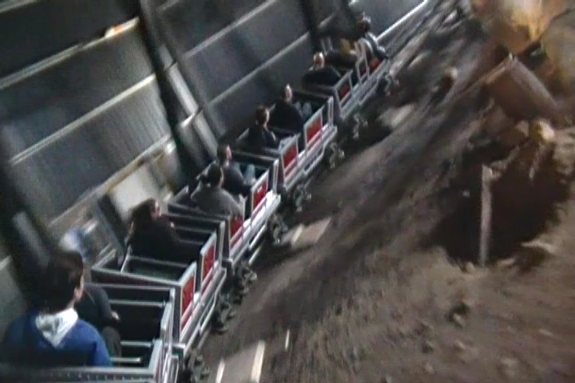
Hey, as long as I don't have to deal with Mamma Mia, I have no problem with marathoning the pseudo-credit with everyone else.
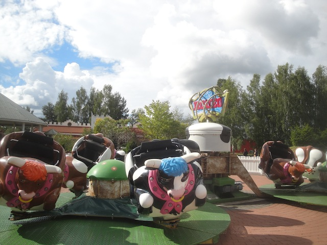
Hamburger Meat: The Ride
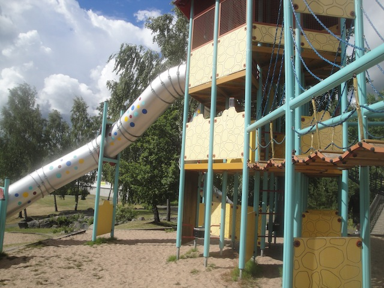
Yawn, these slides aren't 10 stories. This is boring.
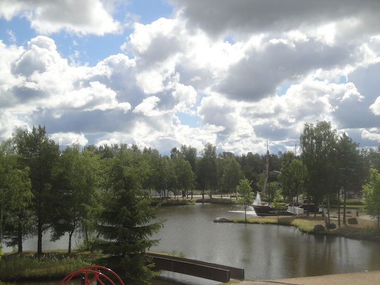
This photo pretty much shows all the other cool stuff that this park has to offer (not much).
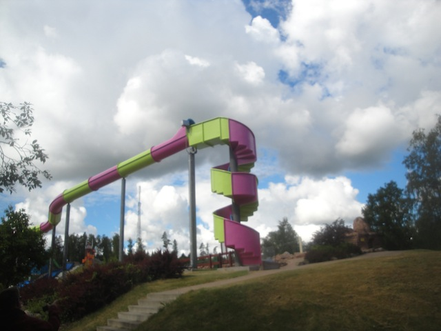
Checking out their water park and...Hmm. What are those stairs for?
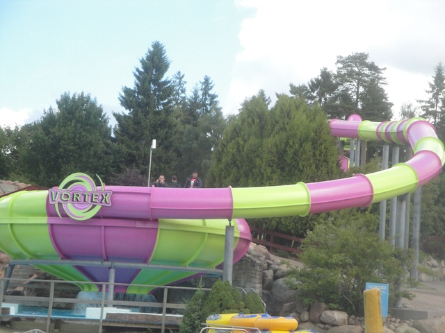
HOLY CRAP!!! THEY HAVE A TOILET BOWL HERE!!!
Kicking myself in the balls for not bringing a bathing suit on this trip. ='(
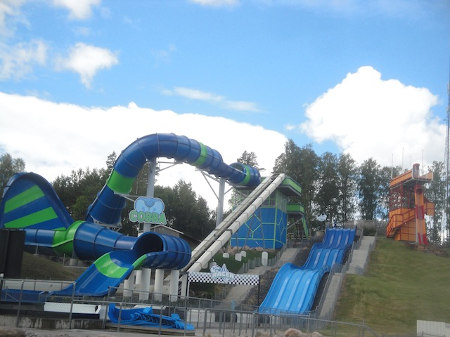
On top of a Bazooka Bowls clone, they also have a Tantrum here and a Trap Door Slide. Yeah, not having my bathing suit is the biggest regret of the entire trip. If only I had known the water park would be this good.
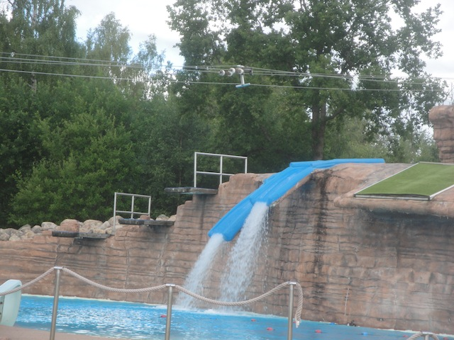
Hmm, seems like a cross between a water slide and a Cascade Pond. I like it. =)
Love all the hilarious falls from the Zipline.
And here is their Congo River Rapids like attraction. Gee, I wonder if this place reminds me of a certain awesome water park that used to exist in So-Cal, but was bulldozed by stupid greedy assholes?
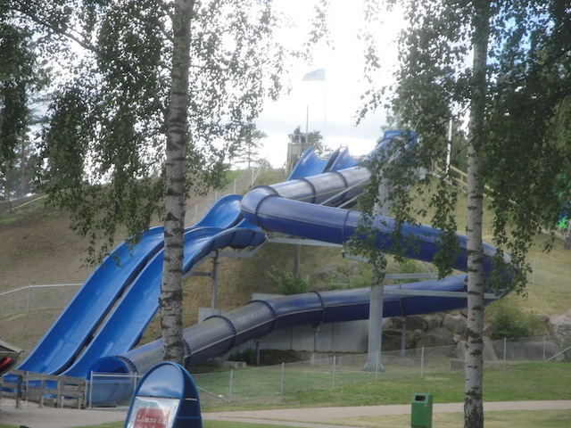
The only slide I could do was this wet'n'dry slide that was pretty lame and not even that wet.
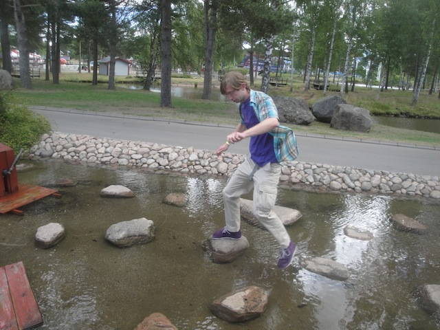
Come on Steven. You're almost back to the path.
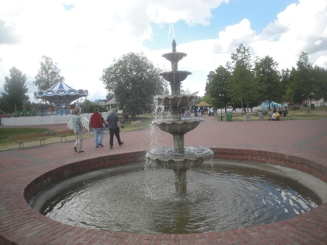
Random Pretty Fountain.
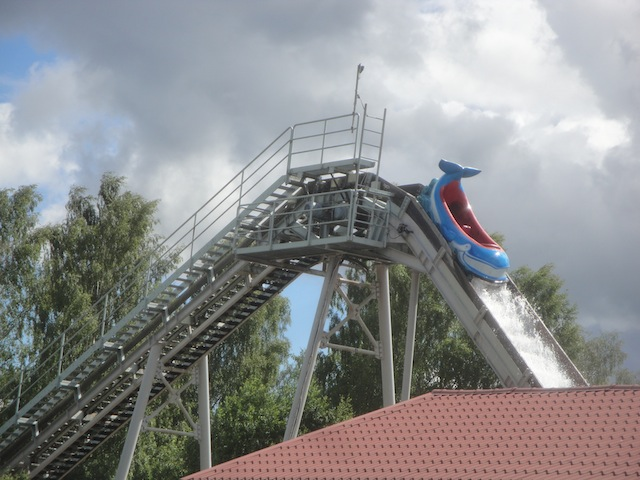
Random lesson from this log flume. If in a European park and they tell you to brace, you better brace because they're not pulling cover-your-ass measures here.
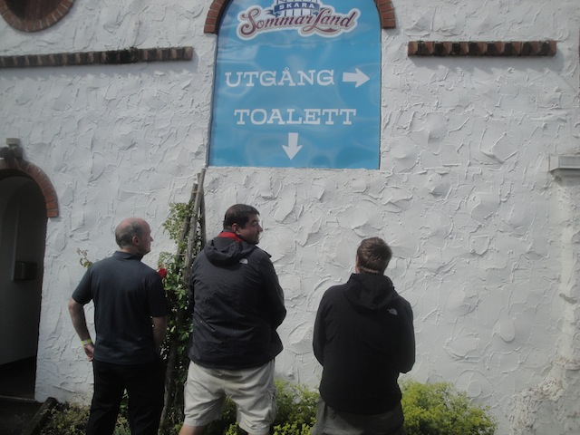
"I may not be a fan of these open bathrooms, but when you gotta go..."
For today's lunch, we got a nice Mexican Food Buffet for lunch. Not amazing for someone who lives in So-Cal and can list at least 5 great local mexican places, but this is good too.
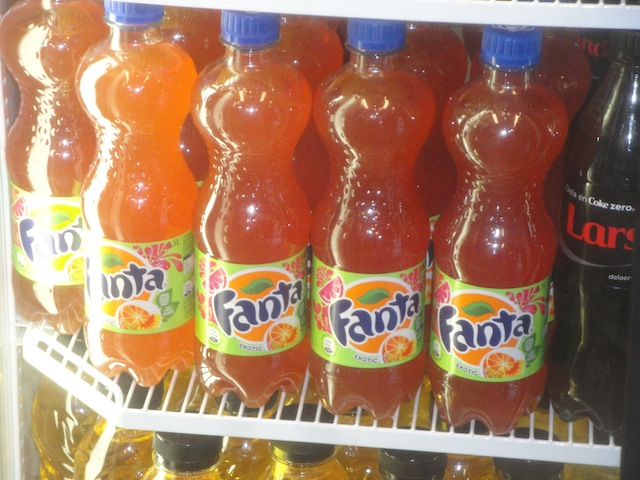
Ooh. They have Fanta Exotic, AKA Fanta Grapefruit. And just like how European Fanta is super orangy, Fanta Exotic is super grapefruity. I'm not a big fan of grapefruit, so I'm not nuts over this. I'll stick to Regular European Fanta.